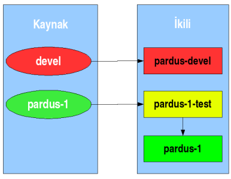

Pardus Depo PolitikasıT. Barış MetinBelge Pardus paket depolarını ve bu depolar üzerinde uyulması gereken kuralları listeler.Belge yalnızca bir kullanım alanına yönelik hazırlanan Pardus işletim sistemi dağıtımı için kuralları tarif eder. Farklı kullanım alanlarına yönelik, farklı Pardus dağıtımları (Pardus, Pardus Sunucu, vb.) bulunabilir. Belgede anlatılan kurallar her Pardus dağıtımı için ayrı ayrı uygulanır. 3 İkili paket depolarıİkili paket depoları PİSİ paketlerinin derlenmiş ve kuruluma hazır hallerinin bulunduğu depolardır. Pardus içerisinde o sıradaki dağıtım sürümü tarafından kullanılan üç ikili depo vardır:
İkinci depo ise kararlı sürüme aktarılmak üzere hazırlanmış olan paketlerin test edildiği depodur. İkili paketler kararlı sürüm deposuna aktarılmadan önce bu test deposuna aktarılır ve test edilmeleri beklenir. Her paket için en az test süresi, depo sorumlusunun insiyatifi saklı tutularak, 2 haftadır. Güvenlik güncellemeleri bu sınırın dışında tutulur. Geliştirme deposu ise bir sonraki kararlı sürüm için hazırlanmakta olan PİSİ paketlerini içerisinde barındırır. 
Pardus sayfalarında bulunan bilgi ve belgelerin,
kaynak gösterilmek koşulu ile kullanılması serbesttir.
|

 Önceki sayfa
Önceki sayfa Başlangıç
Başlangıç